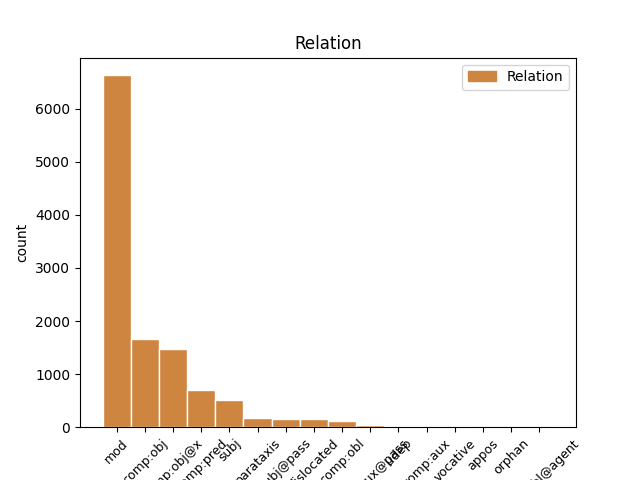
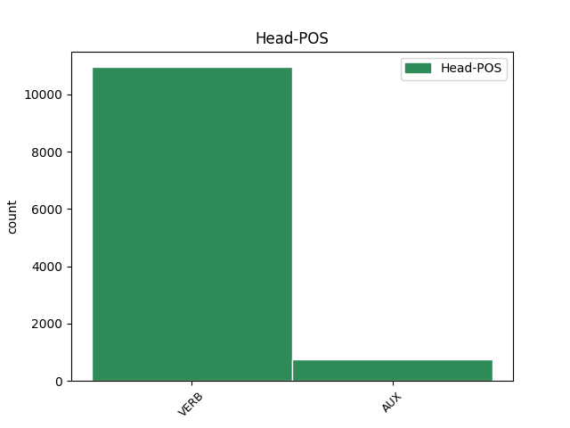
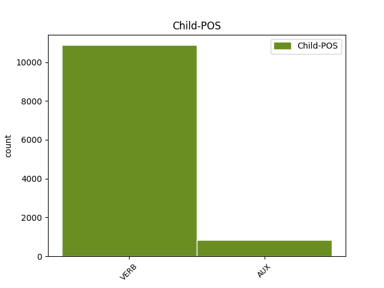

Distribution of features within this leaf



Agreement Rules sorted by frequency.
- When the dependent token is the modifer(mod) of the head token, and the dependent token is VERB.
1 ἐγὼ _ _ _ _ 0 _ _ _
2 Ἰησοῦς _ _ _ _ 0 _ _ _
3 ἔπεμψα πέμπω VERB V- Aspect=Perf|Mood=Ind|Number=Sing|Person=1|Tense=Past|VerbForm=Fin|Voice=Act 0 _ _ _
4 τὸν _ _ _ _ 0 _ _ _
5 ἄγγελόν _ _ _ _ 0 _ _ _
6 μου _ _ _ _ 0 _ _ _
7 μαρτυρῆσαι μαρτυρέω VERB V- Aspect=Perf|Tense=Past|VerbForm=Inf|Voice=Act 3 mod _ ref=REV_22.16
8 ὑμῖν _ _ _ _ 0 _ _ _
9 ταῦτα _ _ _ _ 0 _ _ _
10 ἐπὶ _ _ _ _ 0 _ _ _
11 ταῖς _ _ _ _ 0 _ _ _
12 ἐκκλησίαις _ _ _ _ 0 _ _ _
1 καὶ _ _ _ _ 0 _ _ _
2 ἐπιάσθη _ _ _ _ 0 _ _ _
3 τὸ _ _ _ _ 0 _ _ _
4 θηρίον _ _ _ _ 0 _ _ _
5 καὶ _ _ _ _ 0 _ _ _
6 μετ’ _ _ _ _ 0 _ _ _
7 αὐτοῦ _ _ _ _ 0 _ _ _
8 ὁ _ _ _ _ 0 _ _ _
9 ψευδοπροφήτης _ _ _ _ 0 _ _ _
10 ὁ _ _ _ _ 0 _ _ _
11 ποιήσας _ _ _ _ 0 _ _ _
12 τὰ _ _ _ _ 0 _ _ _
13 σημεῖα _ _ _ _ 0 _ _ _
14 ἐνώπιον _ _ _ _ 0 _ _ _
15 αὐτοῦ _ _ _ _ 0 _ _ _
16 ἐν _ _ _ _ 0 _ _ _
17 οἷς _ _ _ _ 0 _ _ _
18 ἐπλάνησεν πλανάω VERB V- Aspect=Perf|Mood=Ind|Number=Sing|Person=3|Tense=Past|VerbForm=Fin|Voice=Act 0 _ _ _
19 τοὺς _ _ _ _ 0 _ _ _
20 λαβόντας λαμβάνω VERB V- Aspect=Perf|Case=Acc|Gender=Masc|Number=Plur|Tense=Past|VerbForm=Part|Voice=Act 18 comp:obj _ ref=REV_19.20
21 τὸ _ _ _ _ 0 _ _ _
22 χάραγμα _ _ _ _ 0 _ _ _
23 τοῦ _ _ _ _ 0 _ _ _
24 θηρίου _ _ _ _ 0 _ _ _
25 καὶ _ _ _ _ 0 _ _ _
26 τοὺς _ _ _ _ 0 _ _ _
27 προσκυνοῦντας _ _ _ _ 0 _ _ _
28 τῇ _ _ _ _ 0 _ _ _
29 εἰκόνι _ _ _ _ 0 _ _ _
30 αὐτοῦ _ _ _ _ 0 _ _ _
1 ὁ _ _ _ _ 0 _ _ _
2 γὰρ _ _ _ _ 0 _ _ _
3 θεὸς _ _ _ _ 0 _ _ _
4 ἔδωκεν δίδωμι VERB V- Aspect=Perf|Mood=Ind|Number=Sing|Person=3|Tense=Past|VerbForm=Fin|Voice=Act 0 _ _ _
5 εἰς _ _ _ _ 0 _ _ _
6 τὰς _ _ _ _ 0 _ _ _
7 καρδίας _ _ _ _ 0 _ _ _
8 αὐτῶν _ _ _ _ 0 _ _ _
9 ποιῆσαι ποιέω VERB V- Aspect=Perf|Tense=Past|VerbForm=Inf|Voice=Act 4 comp:obj@x _ ref=REV_17.17
10 τὴν _ _ _ _ 0 _ _ _
11 γνώμην _ _ _ _ 0 _ _ _
12 αὐτοῦ _ _ _ _ 0 _ _ _
13 καὶ _ _ _ _ 0 _ _ _
14 ποιῆσαι _ _ _ _ 0 _ _ _
15 μίαν _ _ _ _ 0 _ _ _
16 γνώμην _ _ _ _ 0 _ _ _
17 καὶ _ _ _ _ 0 _ _ _
18 δοῦναι _ _ _ _ 0 _ _ _
19 τὴν _ _ _ _ 0 _ _ _
20 βασιλείαν _ _ _ _ 0 _ _ _
21 αὐτῶν _ _ _ _ 0 _ _ _
22 τῷ _ _ _ _ 0 _ _ _
23 θηρίῳ _ _ _ _ 0 _ _ _
24 ἄχρι _ _ _ _ 0 _ _ _
25 τελεσθήσονται _ _ _ _ 0 _ _ _
26 οἱ _ _ _ _ 0 _ _ _
27 λόγοι _ _ _ _ 0 _ _ _
28 τοῦ _ _ _ _ 0 _ _ _
29 θεοῦ _ _ _ _ 0 _ _ _
1 Λέγει λέγω VERB V- Mood=Ind|Number=Sing|Person=3|Tense=Pres|VerbForm=Fin|Voice=Act 0 _ _ _
2 ὁ _ _ _ _ 0 _ _ _
3 μαρτυρῶν μαρτυρέω VERB V- Case=Nom|Gender=Masc|Number=Sing|Tense=Pres|VerbForm=Part|Voice=Act 1 subj _ ref=REV_22.20
4 ταῦτα _ _ _ _ 0 _ _ _
1 καὶ _ _ _ _ 0 _ _ _
2 εἴ _ _ _ _ 0 _ _ _
3 τις _ _ _ _ 0 _ _ _
4 οὐχ _ _ _ _ 0 _ _ _
5 εὑρέθη εὑρίσκω VERB V- Aspect=Perf|Mood=Ind|Number=Sing|Person=3|Tense=Past|VerbForm=Fin|Voice=Pass 0 _ _ _
6 ἐν _ _ _ _ 0 _ _ _
7 τῇ _ _ _ _ 0 _ _ _
8 βίβλῳ _ _ _ _ 0 _ _ _
9 τῆς _ _ _ _ 0 _ _ _
10 ζωῆς _ _ _ _ 0 _ _ _
11 γεγραμμένος γράφω VERB V- Aspect=Perf|Case=Nom|Gender=Masc|Number=Sing|Tense=Past|VerbForm=Part|Voice=Pass 5 comp:pred _ ref=REV_20.15
12 ἐβλήθη _ _ _ _ 0 _ _ _
13 εἰς _ _ _ _ 0 _ _ _
14 τὴν _ _ _ _ 0 _ _ _
15 λίμνην _ _ _ _ 0 _ _ _
16 τοῦ _ _ _ _ 0 _ _ _
17 πυρός _ _ _ _ 0 _ _ _
1 κατενόησεν _ _ _ _ 0 _ _ _
2 γὰρ _ _ _ _ 0 _ _ _
3 ἑαυτὸν _ _ _ _ 0 _ _ _
4 καὶ _ _ _ _ 0 _ _ _
5 ἀπελήλυθεν _ _ _ _ 0 _ _ _
6 καὶ _ _ _ _ 0 _ _ _
7 εὐθέως _ _ _ _ 0 _ _ _
8 ἐπελάθετο ἐπιλανθάνομαι VERB V- Aspect=Perf|Mood=Ind|Number=Sing|Person=3|Tense=Past|VerbForm=Fin|Voice=Mid 0 _ _ _
9 ὁποῖος _ _ _ _ 0 _ _ _
10 ἦν εἰμί AUX V- Aspect=Imp|Mood=Ind|Number=Sing|Person=3|Tense=Past|VerbForm=Fin|Voice=Act 8 comp:obj _ LId=1|ref=JAS_1.24
1 ἰδοὺ _ _ _ _ 0 _ _ _
2 καὶ _ _ _ _ 0 _ _ _
3 τὰ _ _ _ _ 0 _ _ _
4 πλοῖα _ _ _ _ 0 _ _ _
5 τηλικαῦτα _ _ _ _ 0 _ _ _
6 ὄντα εἰμί AUX V- Case=Nom|Gender=Neut|Number=Plur|Tense=Pres|VerbForm=Part|Voice=Act 12 mod _ LId=1|ref=JAS_3.4
7 καὶ _ _ _ _ 0 _ _ _
8 ὑπὸ _ _ _ _ 0 _ _ _
9 ἀνέμων _ _ _ _ 0 _ _ _
10 σκληρῶν _ _ _ _ 0 _ _ _
11 ἐλαυνόμενα _ _ _ _ 0 _ _ _
12 μετάγεται μετάγω VERB V- Mood=Ind|Number=Sing|Person=3|Tense=Pres|VerbForm=Fin|Voice=Pass 0 _ _ _
13 ὑπὸ _ _ _ _ 0 _ _ _
14 ἐλαχίστου _ _ _ _ 0 _ _ _
15 πηδαλίου _ _ _ _ 0 _ _ _
16 ὅπου _ _ _ _ 0 _ _ _
17 ἡ _ _ _ _ 0 _ _ _
18 ὁρμὴ _ _ _ _ 0 _ _ _
19 τοῦ _ _ _ _ 0 _ _ _
20 εὐθύνοντος _ _ _ _ 0 _ _ _
21 βούλεται _ _ _ _ 0 _ _ _
1 εἴ _ _ _ _ 0 _ _ _
2 τις _ _ _ _ 0 _ _ _
3 δοκεῖ δοκέω VERB V- Mood=Ind|Number=Sing|Person=3|Tense=Pres|VerbForm=Fin|Voice=Act 0 _ _ _
4 θρησκὸς _ _ _ _ 0 _ _ _
5 εἶναι εἰμί AUX V- Tense=Pres|VerbForm=Inf|Voice=Act 3 comp:obj@x _ LId=1|ref=JAS_1.26
6 μὴ _ _ _ _ 0 _ _ _
7 χαλιναγωγῶν _ _ _ _ 0 _ _ _
8 γλῶσσαν _ _ _ _ 0 _ _ _
9 αὐτοῦ _ _ _ _ 0 _ _ _
10 ἀλλὰ _ _ _ _ 0 _ _ _
11 ἀπατῶν _ _ _ _ 0 _ _ _
12 καρδίαν _ _ _ _ 0 _ _ _
13 αὐτοῦ _ _ _ _ 0 _ _ _
14 τούτου _ _ _ _ 0 _ _ _
15 μάταιος _ _ _ _ 0 _ _ _
16 ἡ _ _ _ _ 0 _ _ _
17 θρησκία _ _ _ _ 0 _ _ _
1 καὶ _ _ _ _ 0 _ _ _
2 εἶδον _ _ _ _ 0 _ _ _
3 τὸν _ _ _ _ 0 _ _ _
4 οὐρανὸν _ _ _ _ 0 _ _ _
5 ἠνεῳγμένον _ _ _ _ 0 _ _ _
6 καὶ _ _ _ _ 0 _ _ _
7 ἰδοὺ _ _ _ _ 0 _ _ _
8 ἵππος _ _ _ _ 0 _ _ _
9 λευκός _ _ _ _ 0 _ _ _
10 καὶ _ _ _ _ 0 _ _ _
11 ὁ _ _ _ _ 0 _ _ _
12 καθήμενος κάθημαι VERB V- Case=Nom|Gender=Masc|Number=Sing|Tense=Pres|VerbForm=Part|Voice=Mid 15 subj@pass _ ref=REV_19.11
13 ἐπ’ _ _ _ _ 0 _ _ _
14 αὐτὸν _ _ _ _ 0 _ _ _
15 καλούμενος καλέω VERB V- Case=Nom|Gender=Masc|Number=Sing|Tense=Pres|VerbForm=Part|Voice=Pass 0 _ _ _
16 πιστὸς _ _ _ _ 0 _ _ _
17 καὶ _ _ _ _ 0 _ _ _
18 ἀληθινός _ _ _ _ 0 _ _ _
19 καὶ _ _ _ _ 0 _ _ _
20 ἐν _ _ _ _ 0 _ _ _
21 δικαιοσύνῃ _ _ _ _ 0 _ _ _
22 κρίνει _ _ _ _ 0 _ _ _
23 καὶ _ _ _ _ 0 _ _ _
24 πολεμεῖ _ _ _ _ 0 _ _ _
1 ὅσα _ _ _ _ 0 _ _ _
2 ἐδόξασεν δοξάζω VERB V- Aspect=Perf|Mood=Ind|Number=Sing|Person=3|Tense=Past|VerbForm=Fin|Voice=Act 7 dislocated _ ref=REV_18.7
3 αὐτὴν _ _ _ _ 0 _ _ _
4 καὶ _ _ _ _ 0 _ _ _
5 ἐστρηνίασεν _ _ _ _ 0 _ _ _
6 τοσοῦτον _ _ _ _ 0 _ _ _
7 δότε δίδωμι VERB V- Aspect=Perf|Mood=Imp|Number=Plur|Person=2|Tense=Past|VerbForm=Fin|Voice=Act 0 _ _ _
8 αὐτῇ _ _ _ _ 0 _ _ _
9 βασανισμὸν _ _ _ _ 0 _ _ _
10 καὶ _ _ _ _ 0 _ _ _
11 πένθος _ _ _ _ 0 _ _ _
1 ὁ _ _ _ _ 0 _ _ _
2 γὰρ _ _ _ _ 0 _ _ _
3 εἰπών _ _ _ _ 0 _ _ _
4 μὴ _ _ _ _ 0 _ _ _
5 μοιχεύσῃς μοιχεύω VERB V- Aspect=Perf|Mood=Sub|Number=Sing|Person=2|Tense=Past|VerbForm=Fin|Voice=Act 6 parataxis _ ref=JAS_2.11
6 εἶπεν λέγω VERB V- Aspect=Perf|Mood=Ind|Number=Sing|Person=3|Tense=Past|VerbForm=Fin|Voice=Act 0 _ _ _
7 καί _ _ _ _ 0 _ _ _
1 μαρτυρῶ μαρτυρέω VERB V- Mood=Ind|Number=Sing|Person=1|Tense=Pres|VerbForm=Fin|Voice=Act 0 _ _ _
2 ἐγὼ _ _ _ _ 0 _ _ _
3 παντὶ _ _ _ _ 0 _ _ _
4 τῷ _ _ _ _ 0 _ _ _
5 ἀκούοντι ἀκούω VERB V- Case=Dat|Gender=Masc|Number=Sing|Tense=Pres|VerbForm=Part|Voice=Act 1 comp:obl _ ref=REV_22.18
6 τοὺς _ _ _ _ 0 _ _ _
7 λόγους _ _ _ _ 0 _ _ _
8 τῆς _ _ _ _ 0 _ _ _
9 προφητείας _ _ _ _ 0 _ _ _
10 τοῦ _ _ _ _ 0 _ _ _
11 βιβλίου _ _ _ _ 0 _ _ _
12 τούτου _ _ _ _ 0 _ _ _
1 χάριτι _ _ _ _ 0 _ _ _
2 δὲ _ _ _ _ 0 _ _ _
3 θεοῦ _ _ _ _ 0 _ _ _
4 εἰμι εἰμί AUX V- Mood=Ind|Number=Sing|Person=1|Tense=Pres|VerbForm=Fin|Voice=Act 0 _ _ _
5 ὅ _ _ _ _ 0 _ _ _
6 εἰμι εἰμί AUX V- Mood=Ind|Number=Sing|Person=1|Tense=Pres|VerbForm=Fin|Voice=Act 4 comp:pred _ LId=1|ref=1COR_15.10
7 καὶ _ _ _ _ 0 _ _ _
8 ἡ _ _ _ _ 0 _ _ _
9 χάρις _ _ _ _ 0 _ _ _
10 αὐτοῦ _ _ _ _ 0 _ _ _
11 ἡ _ _ _ _ 0 _ _ _
12 εἰς _ _ _ _ 0 _ _ _
13 ἐμὲ _ _ _ _ 0 _ _ _
14 οὐ _ _ _ _ 0 _ _ _
15 κενὴ _ _ _ _ 0 _ _ _
16 ἐγενήθη _ _ _ _ 0 _ _ _
17 ἀλλὰ _ _ _ _ 0 _ _ _
18 περισσότερον _ _ _ _ 0 _ _ _
19 αὐτῶν _ _ _ _ 0 _ _ _
20 πάντων _ _ _ _ 0 _ _ _
21 ἐκοπίασα _ _ _ _ 0 _ _ _
22 οὐκ _ _ _ _ 0 _ _ _
23 ἐγὼ _ _ _ _ 0 _ _ _
24 δὲ _ _ _ _ 0 _ _ _
25 ἀλλὰ _ _ _ _ 0 _ _ _
26 ἡ _ _ _ _ 0 _ _ _
27 χάρις _ _ _ _ 0 _ _ _
28 τοῦ _ _ _ _ 0 _ _ _
29 θεοῦ _ _ _ _ 0 _ _ _
30 σὺν _ _ _ _ 0 _ _ _
31 ἐμοί _ _ _ _ 0 _ _ _
1 καὶ _ _ _ _ 0 _ _ _
2 ἡ _ _ _ _ 0 _ _ _
3 γυνὴ _ _ _ _ 0 _ _ _
4 ἦν εἰμί AUX V- Aspect=Imp|Mood=Ind|Number=Sing|Person=3|Tense=Past|VerbForm=Fin|Voice=Act 0 _ _ _
5 περιβεβλημένη περιβάλλω VERB V- Aspect=Perf|Case=Nom|Gender=Fem|Number=Sing|Tense=Past|VerbForm=Part|Voice=Pass 4 comp:aux@pass _ ref=REV_17.4
6 πορφυροῦν _ _ _ _ 0 _ _ _
7 καὶ _ _ _ _ 0 _ _ _
8 κόκκινον _ _ _ _ 0 _ _ _
9 καὶ _ _ _ _ 0 _ _ _
10 κεχρυσωμένη _ _ _ _ 0 _ _ _
11 χρυσῷ _ _ _ _ 0 _ _ _
12 καὶ _ _ _ _ 0 _ _ _
13 λίθῳ _ _ _ _ 0 _ _ _
14 τιμίῳ _ _ _ _ 0 _ _ _
15 καὶ _ _ _ _ 0 _ _ _
16 μαργαρίταις _ _ _ _ 0 _ _ _
17 ἔχουσα _ _ _ _ 0 _ _ _
18 ποτήριον _ _ _ _ 0 _ _ _
19 χρυσοῦν _ _ _ _ 0 _ _ _
20 ἐν _ _ _ _ 0 _ _ _
21 τῇ _ _ _ _ 0 _ _ _
22 χειρὶ _ _ _ _ 0 _ _ _
23 αὐτῆς _ _ _ _ 0 _ _ _
24 γέμων _ _ _ _ 0 _ _ _
25 βδελυγμάτων _ _ _ _ 0 _ _ _
26 καὶ _ _ _ _ 0 _ _ _
27 τὰ _ _ _ _ 0 _ _ _
28 ἀκάθαρτα _ _ _ _ 0 _ _ _
29 τῆς _ _ _ _ 0 _ _ _
30 πορνείας _ _ _ _ 0 _ _ _
31 αὐτῆς _ _ _ _ 0 _ _ _
32 καὶ _ _ _ _ 0 _ _ _
33 ἐπὶ _ _ _ _ 0 _ _ _
34 τὸ _ _ _ _ 0 _ _ _
35 μέτωπον _ _ _ _ 0 _ _ _
36 αὐτῆς _ _ _ _ 0 _ _ _
37 ὄνομα _ _ _ _ 0 _ _ _
38 γεγραμμένον _ _ _ _ 0 _ _ _
39 μυστήριον _ _ _ _ 0 _ _ _
1 οὐκ _ _ _ _ 0 _ _ _
2 ἔφερον φέρω VERB V- Aspect=Imp|Mood=Ind|Number=Plur|Person=3|Tense=Past|VerbForm=Fin|Voice=Act 0 _ _ _
3 γὰρ _ _ _ _ 0 _ _ _
4 τὸ _ _ _ _ 0 _ _ _
5 διαστελλόμενον _ _ _ _ 0 _ _ _
6 καὶ _ _ _ _ 0 _ _ _
7 ἄν _ _ _ _ 0 _ _ _
8 θηρίον _ _ _ _ 0 _ _ _
9 θίγῃ _ _ _ _ 0 _ _ _
10 τοῦ _ _ _ _ 0 _ _ _
11 ὄρους _ _ _ _ 0 _ _ _
12 λιθοβοληθήσεται _ _ _ _ 0 _ _ _
13 καί _ _ _ _ 0 _ _ _
14 οὕτω _ _ _ _ 0 _ _ _
15 φοβερὸν _ _ _ _ 0 _ _ _
16 ἦν εἰμί AUX V- Aspect=Imp|Mood=Ind|Number=Sing|Person=3|Tense=Past|VerbForm=Fin|Voice=Act 2 parataxis _ LId=1|ref=HEB_12.21
17 τὸ _ _ _ _ 0 _ _ _
18 φανταζόμενον _ _ _ _ 0 _ _ _
19 Μωϋσῆς _ _ _ _ 0 _ _ _
20 εἶπεν _ _ _ _ 0 _ _ _
1 δίκαιος _ _ _ _ 0 _ _ _
2 εἶ εἰμί AUX V- Mood=Ind|Number=Sing|Person=2|Tense=Pres|VerbForm=Fin|Voice=Act 0 _ _ _
3 ὁ _ _ _ _ 0 _ _ _
4 ὢν εἰμί AUX V- Case=Nom|Gender=Masc|Number=Sing|Tense=Pres|VerbForm=Part|Voice=Act 2 subj _ LId=1|ref=REV_16.5
5 καὶ _ _ _ _ 0 _ _ _
6 ὁ _ _ _ _ 0 _ _ _
7 ἦν _ _ _ _ 0 _ _ _
8 ὁ _ _ _ _ 0 _ _ _
9 ὅσιος _ _ _ _ 0 _ _ _
10 ὅτι _ _ _ _ 0 _ _ _
11 ταῦτα _ _ _ _ 0 _ _ _
12 ἔκρινας _ _ _ _ 0 _ _ _
13 ὅτι _ _ _ _ 0 _ _ _
14 αἵματα _ _ _ _ 0 _ _ _
15 ἁγίων _ _ _ _ 0 _ _ _
16 καὶ _ _ _ _ 0 _ _ _
17 προφητῶν _ _ _ _ 0 _ _ _
18 ἐξέχεαν _ _ _ _ 0 _ _ _
19 καὶ _ _ _ _ 0 _ _ _
20 αἷμα _ _ _ _ 0 _ _ _
21 αὐτοῖς _ _ _ _ 0 _ _ _
22 ἔδωκας _ _ _ _ 0 _ _ _
23 πεῖν _ _ _ _ 0 _ _ _
1 καὶ _ _ _ _ 0 _ _ _
2 ὁ _ _ _ _ 0 _ _ _
3 χιλίαρχος _ _ _ _ 0 _ _ _
4 δὲ _ _ _ _ 0 _ _ _
5 ἐφοβήθη _ _ _ _ 0 _ _ _
6 ἐπιγνοὺς _ _ _ _ 0 _ _ _
7 ὅτι _ _ _ _ 0 _ _ _
8 Ῥωμαῖός _ _ _ _ 0 _ _ _
9 ἐστιν _ _ _ _ 0 _ _ _
10 καὶ _ _ _ _ 0 _ _ _
11 ὅτι _ _ _ _ 0 _ _ _
12 αὐτὸν _ _ _ _ 0 _ _ _
13 ἦν εἰμί AUX V- Aspect=Imp|Mood=Ind|Number=Sing|Person=3|Tense=Past|VerbForm=Fin|Voice=Act 0 _ _ _
14 δεδεκώς δέω VERB V- Aspect=Perf|Case=Nom|Gender=Masc|Number=Sing|Tense=Past|VerbForm=Part|Voice=Act 13 comp:aux _ LId=1|ref=ACTS_22.29
1 Ἠλείας _ _ _ _ 0 _ _ _
2 ἄνθρωπος _ _ _ _ 0 _ _ _
3 ἦν _ _ _ _ 0 _ _ _
4 ὁμοιοπαθὴς _ _ _ _ 0 _ _ _
5 ἡμῖν _ _ _ _ 0 _ _ _
6 καὶ _ _ _ _ 0 _ _ _
7 προσευχῇ _ _ _ _ 0 _ _ _
8 προσηύξατο προσεύχομαι VERB V- Aspect=Perf|Mood=Ind|Number=Sing|Person=3|Tense=Past|VerbForm=Fin|Voice=Mid 0 _ _ _
9 τοῦ _ _ _ _ 0 _ _ _
10 μὴ _ _ _ _ 0 _ _ _
11 βρέξαι βρέχω VERB V- Aspect=Perf|Tense=Past|VerbForm=Inf|Voice=Act 8 udep _ ref=JAS_5.17
12 καὶ _ _ _ _ 0 _ _ _
13 οὐκ _ _ _ _ 0 _ _ _
14 ἔβρεξεν _ _ _ _ 0 _ _ _
15 ἐπὶ _ _ _ _ 0 _ _ _
16 τῆς _ _ _ _ 0 _ _ _
17 γῆς _ _ _ _ 0 _ _ _
18 ἐνιαυτοὺς _ _ _ _ 0 _ _ _
19 τρεῖς _ _ _ _ 0 _ _ _
20 καὶ _ _ _ _ 0 _ _ _
21 μῆνας _ _ _ _ 0 _ _ _
22 ἕξ _ _ _ _ 0 _ _ _
1 Ἄγε ἄγω VERB V- Mood=Imp|Number=Sing|Person=2|Tense=Pres|VerbForm=Fin|Voice=Act 0 _ _ _
2 νῦν _ _ _ _ 0 _ _ _
3 οἱ _ _ _ _ 0 _ _ _
4 λέγοντες λέγω VERB V- Case=Voc|Gender=Masc|Number=Plur|Tense=Pres|VerbForm=Part|Voice=Act 1 vocative _ ref=JAS_4.13
1 αἱ _ _ _ _ 0 _ _ _
2 δὲ _ _ _ _ 0 _ _ _
3 οὖσαι εἰμί AUX V- Case=Nom|Gender=Fem|Number=Plur|Tense=Pres|VerbForm=Part|Voice=Act 7 subj@pass _ LId=1|ref=ROM_13.1
4 ὑπὸ _ _ _ _ 0 _ _ _
5 θεοῦ _ _ _ _ 0 _ _ _
6 τεταγμέναι _ _ _ _ 0 _ _ _
7 εἰσίν εἰμί AUX V- Mood=Ind|Number=Plur|Person=3|Tense=Pres|VerbForm=Fin|Voice=Act 0 _ _ _
1 Τὸ _ _ _ _ 0 _ _ _
2 λοιπόν _ _ _ _ 0 _ _ _
3 ἀδελφοί _ _ _ _ 0 _ _ _
4 ὅσα _ _ _ _ 0 _ _ _
5 ἐστὶν εἰμί AUX V- Mood=Ind|Number=Sing|Person=3|Tense=Pres|VerbForm=Fin|Voice=Act 25 dislocated _ LId=1|ref=PHIL_4.8
6 ἀληθῆ _ _ _ _ 0 _ _ _
7 ὅσα _ _ _ _ 0 _ _ _
8 σεμνά _ _ _ _ 0 _ _ _
9 ὅσα _ _ _ _ 0 _ _ _
10 δίκαια _ _ _ _ 0 _ _ _
11 ὅσα _ _ _ _ 0 _ _ _
12 ἁγνά _ _ _ _ 0 _ _ _
13 ὅσα _ _ _ _ 0 _ _ _
14 προσφιλῆ _ _ _ _ 0 _ _ _
15 ὅσα _ _ _ _ 0 _ _ _
16 εὔφημα _ _ _ _ 0 _ _ _
17 εἴ _ _ _ _ 0 _ _ _
18 τις _ _ _ _ 0 _ _ _
19 ἀρετὴ _ _ _ _ 0 _ _ _
20 καὶ _ _ _ _ 0 _ _ _
21 εἴ _ _ _ _ 0 _ _ _
22 τις _ _ _ _ 0 _ _ _
23 ἔπαινος _ _ _ _ 0 _ _ _
24 ταῦτα _ _ _ _ 0 _ _ _
25 λογίζεσθε λογίζομαι VERB V- Mood=Imp|Number=Plur|Person=2|Tense=Pres|VerbForm=Fin|Voice=Mid 0 _ _ _
1 καὶ _ _ _ _ 0 _ _ _
2 ἴδον _ _ _ _ 0 _ _ _
3 καὶ _ _ _ _ 0 _ _ _
4 ἰδοὺ _ _ _ _ 0 _ _ _
5 ἵππος _ _ _ _ 0 _ _ _
6 μέλας _ _ _ _ 0 _ _ _
7 καὶ _ _ _ _ 0 _ _ _
8 ὁ _ _ _ _ 0 _ _ _
9 καθήμενος κάθημαι VERB V- Case=Nom|Gender=Masc|Number=Sing|Tense=Pres|VerbForm=Part|Voice=Mid 0 _ _ _
10 ἐπ’ _ _ _ _ 0 _ _ _
11 αὐτὸν _ _ _ _ 0 _ _ _
12 ἔχων ἔχω VERB V- Case=Nom|Gender=Masc|Number=Sing|Tense=Pres|VerbForm=Part|Voice=Act 9 orphan _ ref=REV_6.5
13 ζυγὸν _ _ _ _ 0 _ _ _
14 ἐν _ _ _ _ 0 _ _ _
15 τῇ _ _ _ _ 0 _ _ _
16 χειρὶ _ _ _ _ 0 _ _ _
17 αὐτοῦ _ _ _ _ 0 _ _ _
1 θεμέλιον _ _ _ _ 0 _ _ _
2 γὰρ _ _ _ _ 0 _ _ _
3 ἄλλον _ _ _ _ 0 _ _ _
4 οὐδεὶς _ _ _ _ 0 _ _ _
5 δύναται _ _ _ _ 0 _ _ _
6 θεῖναι _ _ _ _ 0 _ _ _
7 παρὰ _ _ _ _ 0 _ _ _
8 τὸν _ _ _ _ 0 _ _ _
9 κείμενον κεῖμαι VERB V- Case=Acc|Gender=Masc,Neut|Number=Sing|Tense=Pres|VerbForm=Part|Voice=Mid 0 _ _ _
10 ὅς _ _ _ _ 0 _ _ _
11 ἐστιν εἰμί AUX V- Mood=Ind|Number=Sing|Person=3|Tense=Pres|VerbForm=Fin|Voice=Act 9 appos _ LId=1|ref=1COR_3.11
12 Ἰησοῦς _ _ _ _ 0 _ _ _
13 Χριστός _ _ _ _ 0 _ _ _
1 εἰ _ _ _ _ 0 _ _ _
2 δὲ _ _ _ _ 0 _ _ _
3 χρεόν _ _ _ _ 0 _ _ _
4 ἐστι _ _ _ _ 0 _ _ _
5 τεκμαιρόμενον τεκμαίρομαι VERB V- Case=Acc|Gender=Masc|Number=Sing|Tense=Pres|VerbForm=Part|Voice=Mid 0 _ _ _
6 λέγειν _ _ _ _ 0 _ _ _
7 τοῖσι _ _ _ _ 0 _ _ _
8 νῦν _ _ _ _ 0 _ _ _
9 ἔτι _ _ _ _ 0 _ _ _
10 ἐοῦσι εἰμί AUX V- Case=Dat|Gender=Masc|Number=Plur|Tense=Pres|VerbForm=Part|Voice=Act 5 comp:obl _ LId=1|ref=1.57.1
11 Πελασγῶν _ _ _ _ 0 _ _ _
12 τῶν _ _ _ _ 0 _ _ _
13 ὑπὲρ _ _ _ _ 0 _ _ _
14 Τυρσηνῶν _ _ _ _ 0 _ _ _
15 Κρηστῶνα _ _ _ _ 0 _ _ _
16 πόλιν _ _ _ _ 0 _ _ _
17 οἰκεόντων _ _ _ _ 0 _ _ _
18 οἳ _ _ _ _ 0 _ _ _
19 ὅμουροι _ _ _ _ 0 _ _ _
20 κοτὲ _ _ _ _ 0 _ _ _
21 ἦσαν _ _ _ _ 0 _ _ _
22 τοῖσι _ _ _ _ 0 _ _ _
23 νῦν _ _ _ _ 0 _ _ _
24 Δωριεῦσι _ _ _ _ 0 _ _ _
25 καλεομένοισι _ _ _ _ 0 _ _ _
26 οἴκεον _ _ _ _ 0 _ _ _
27 δὲ _ _ _ _ 0 _ _ _
28 τηνικαῦτα _ _ _ _ 0 _ _ _
29 γῆν _ _ _ _ 0 _ _ _
30 τὴν _ _ _ _ 0 _ _ _
31 νῦν _ _ _ _ 0 _ _ _
32 Θεσσαλιῶτιν _ _ _ _ 0 _ _ _
33 καλεομένην _ _ _ _ 0 _ _ _
34 καὶ _ _ _ _ 0 _ _ _
35 τῶν _ _ _ _ 0 _ _ _
36 Πλακίην _ _ _ _ 0 _ _ _
37 τε _ _ _ _ 0 _ _ _
38 καὶ _ _ _ _ 0 _ _ _
39 Σκυλάκην _ _ _ _ 0 _ _ _
40 Πελασγῶν _ _ _ _ 0 _ _ _
41 οἰκησάντων _ _ _ _ 0 _ _ _
42 ἐν _ _ _ _ 0 _ _ _
43 Ἑλλησπόντῳ _ _ _ _ 0 _ _ _
44 οἳ _ _ _ _ 0 _ _ _
45 σύνοικοι _ _ _ _ 0 _ _ _
46 ἐγένοντο _ _ _ _ 0 _ _ _
47 Ἀθηναίοισι _ _ _ _ 0 _ _ _
48 καὶ _ _ _ _ 0 _ _ _
49 ὅσα _ _ _ _ 0 _ _ _
50 ἄλλα _ _ _ _ 0 _ _ _
51 Πελασγικὰ _ _ _ _ 0 _ _ _
52 ἐόντα _ _ _ _ 0 _ _ _
53 πολίσματα _ _ _ _ 0 _ _ _
54 τὸ _ _ _ _ 0 _ _ _
55 οὔνομα _ _ _ _ 0 _ _ _
56 μετέβαλε _ _ _ _ 0 _ _ _
57 εἰ _ _ _ _ 0 _ _ _
58 τούτοισι _ _ _ _ 0 _ _ _
59 τεκμαιρόμενον _ _ _ _ 0 _ _ _
60 δεῖ _ _ _ _ 0 _ _ _
61 λέγειν _ _ _ _ 0 _ _ _
62 ἦσαν _ _ _ _ 0 _ _ _
63 οἱ _ _ _ _ 0 _ _ _
64 Πελασγοὶ _ _ _ _ 0 _ _ _
65 βάρβαρον _ _ _ _ 0 _ _ _
66 γλῶσσαν _ _ _ _ 0 _ _ _
67 ἱέντες _ _ _ _ 0 _ _ _
1 λέγω λέγω VERB V- Mood=Ind|Number=Sing|Person=1|Tense=Pres|VerbForm=Fin|Voice=Act 0 _ _ _
2 γὰρ _ _ _ _ 0 _ _ _
3 διὰ _ _ _ _ 0 _ _ _
4 τῆς _ _ _ _ 0 _ _ _
5 χάριτος _ _ _ _ 0 _ _ _
6 τῆς _ _ _ _ 0 _ _ _
7 δοθείσης _ _ _ _ 0 _ _ _
8 μοι _ _ _ _ 0 _ _ _
9 παντὶ _ _ _ _ 0 _ _ _
10 τῷ _ _ _ _ 0 _ _ _
11 ὄντι εἰμί AUX V- Case=Dat|Gender=Masc|Number=Sing|Tense=Pres|VerbForm=Part|Voice=Act 1 udep _ LId=1|ref=ROM_12.3
12 ἐν _ _ _ _ 0 _ _ _
13 ὑμῖν _ _ _ _ 0 _ _ _
14 μὴ _ _ _ _ 0 _ _ _
15 ὑπερφρονεῖν _ _ _ _ 0 _ _ _
16 παρ’ _ _ _ _ 0 _ _ _
17 ὃ _ _ _ _ 0 _ _ _
18 δεῖ _ _ _ _ 0 _ _ _
19 φρονεῖν _ _ _ _ 0 _ _ _
20 ἀλλὰ _ _ _ _ 0 _ _ _
21 φρονεῖν _ _ _ _ 0 _ _ _
22 εἰς _ _ _ _ 0 _ _ _
23 τὸ _ _ _ _ 0 _ _ _
24 σωφρονεῖν _ _ _ _ 0 _ _ _
25 ἑκάστῳ _ _ _ _ 0 _ _ _
26 ὡς _ _ _ _ 0 _ _ _
27 ὁ _ _ _ _ 0 _ _ _
28 θεὸς _ _ _ _ 0 _ _ _
29 ἐμέρισεν _ _ _ _ 0 _ _ _
30 μέτρον _ _ _ _ 0 _ _ _
31 πίστεως _ _ _ _ 0 _ _ _
1 καρπὸς _ _ _ _ 0 _ _ _
2 δὲ _ _ _ _ 0 _ _ _
3 δικαιοσύνης _ _ _ _ 0 _ _ _
4 ἐν _ _ _ _ 0 _ _ _
5 εἰρήνῃ _ _ _ _ 0 _ _ _
6 σπείρεται σπείρω VERB V- Mood=Ind|Number=Sing|Person=3|Tense=Pres|VerbForm=Fin|Voice=Pass 0 _ _ _
7 τοῖς _ _ _ _ 0 _ _ _
8 ποιοῦσιν ποιέω VERB V- Case=Dat|Gender=Masc|Number=Plur|Tense=Pres|VerbForm=Part|Voice=Act 6 comp:obl@agent _ ref=JAS_3.18
9 εἰρήνην _ _ _ _ 0 _ _ _
1 καὶ _ _ _ _ 0 _ _ _
2 ποιεῖ _ _ _ _ 0 _ _ _
3 πάντας _ _ _ _ 0 _ _ _
4 τοὺς _ _ _ _ 0 _ _ _
5 μικροὺς _ _ _ _ 0 _ _ _
6 καὶ _ _ _ _ 0 _ _ _
7 τοὺς _ _ _ _ 0 _ _ _
8 μεγάλους _ _ _ _ 0 _ _ _
9 καὶ _ _ _ _ 0 _ _ _
10 τοὺς _ _ _ _ 0 _ _ _
11 πλουσίους _ _ _ _ 0 _ _ _
12 καὶ _ _ _ _ 0 _ _ _
13 τοὺς _ _ _ _ 0 _ _ _
14 πτωχούς _ _ _ _ 0 _ _ _
15 καὶ _ _ _ _ 0 _ _ _
16 τοὺς _ _ _ _ 0 _ _ _
17 ἐλευθέρους _ _ _ _ 0 _ _ _
18 καὶ _ _ _ _ 0 _ _ _
19 τοὺς _ _ _ _ 0 _ _ _
20 δούλους _ _ _ _ 0 _ _ _
21 ἵνα _ _ _ _ 0 _ _ _
22 δῶσιν _ _ _ _ 0 _ _ _
23 αὐτοῖς _ _ _ _ 0 _ _ _
24 χάραγμα _ _ _ _ 0 _ _ _
25 ἐπὶ _ _ _ _ 0 _ _ _
26 τῆς _ _ _ _ 0 _ _ _
27 χειρὸς _ _ _ _ 0 _ _ _
28 αὐτῶν _ _ _ _ 0 _ _ _
29 τῆς _ _ _ _ 0 _ _ _
30 δεξιᾶς _ _ _ _ 0 _ _ _
31 ἢ _ _ _ _ 0 _ _ _
32 ἐπὶ _ _ _ _ 0 _ _ _
33 τὸ _ _ _ _ 0 _ _ _
34 μέτωπον _ _ _ _ 0 _ _ _
35 αὐτῶν _ _ _ _ 0 _ _ _
36 ἵνα _ _ _ _ 0 _ _ _
37 μή _ _ _ _ 0 _ _ _
38 τις _ _ _ _ 0 _ _ _
39 δύνηται _ _ _ _ 0 _ _ _
40 ἀγοράσαι ἀγοράζω AUX V- Aspect=Perf|Tense=Past|VerbForm=Inf|Voice=Act 0 _ _ _
41 ἢ _ _ _ _ 0 _ _ _
42 πωλῆσαι πωλέω AUX V- Aspect=Perf|Tense=Past|VerbForm=Inf|Voice=Act 40 comp:aux _ ref=REV_13.17
43 εἰ _ _ _ _ 0 _ _ _
44 μὴ _ _ _ _ 0 _ _ _
45 ὁ _ _ _ _ 0 _ _ _
46 ἔχων _ _ _ _ 0 _ _ _
47 τὸ _ _ _ _ 0 _ _ _
48 χάραγμα _ _ _ _ 0 _ _ _
49 τὸ _ _ _ _ 0 _ _ _
50 ὄνομα _ _ _ _ 0 _ _ _
51 τοῦ _ _ _ _ 0 _ _ _
52 θηρίου _ _ _ _ 0 _ _ _
53 ἢ _ _ _ _ 0 _ _ _
54 τὸν _ _ _ _ 0 _ _ _
55 ἀριθμὸν _ _ _ _ 0 _ _ _
56 τοῦ _ _ _ _ 0 _ _ _
57 ὀνόματος _ _ _ _ 0 _ _ _
58 αὐτοῦ _ _ _ _ 0 _ _ _
Disagree Examples:
1 Περσέων _ _ _ _ 0 _ _ _
2 μέν _ _ _ _ 0 _ _ _
3 νυν _ _ _ _ 0 _ _ _
4 οἱ _ _ _ _ 0 _ _ _
5 λόγιοι _ _ _ _ 0 _ _ _
6 Φοίνικας _ _ _ _ 0 _ _ _
7 αἰτίους _ _ _ _ 0 _ _ _
8 φασὶ φημί VERB V- Mood=Ind|Number=Plur|Person=3|Tense=Pres|VerbForm=Fin|Voice=Act 0 _ _ _
9 γενέσθαι γίγνομαι VERB V- Aspect=Perf|Tense=Past|VerbForm=Inf|Voice=Mid 8 comp:obj _ ref=1.1.1
10 τῆς _ _ _ _ 0 _ _ _
11 διαφορῆς _ _ _ _ 0 _ _ _
1 ἀπικομένους ἀφικνέομαι VERB V- Aspect=Perf|Case=Acc|Gender=Masc|Number=Plur|Tense=Past|VerbForm=Part|Voice=Mid 10 mod _ ref=1.1.2
2 δὲ _ _ _ _ 0 _ _ _
3 τούς _ _ _ _ 0 _ _ _
4 Φοίνικας _ _ _ _ 0 _ _ _
5 ἐς _ _ _ _ 0 _ _ _
6 δὴ _ _ _ _ 0 _ _ _
7 τὸ _ _ _ _ 0 _ _ _
8 Ἄργος _ _ _ _ 0 _ _ _
9 τοῦτο _ _ _ _ 0 _ _ _
10 διατίθεσθαι διατίθημι VERB V- Tense=Pres|VerbForm=Inf|Voice=Mid 0 _ _ _
11 τὸν _ _ _ _ 0 _ _ _
12 φόρτον _ _ _ _ 0 _ _ _
1 ταύτας _ _ _ _ 0 _ _ _
2 στάσας ἵστημι VERB V- Aspect=Perf|Case=Acc|Gender=Fem|Number=Plur|Tense=Past|VerbForm=Part|Voice=Act 7 mod _ ref=1.1.4
3 κατά _ _ _ _ 0 _ _ _
4 πρύμνην _ _ _ _ 0 _ _ _
5 τῆς _ _ _ _ 0 _ _ _
6 νεὸς _ _ _ _ 0 _ _ _
7 ὠνέεσθαι ὠνέομαι VERB V- Tense=Pres|VerbForm=Inf|Voice=Mid 0 _ _ _
8 τῶν _ _ _ _ 0 _ _ _
9 φορτίων _ _ _ _ 0 _ _ _
10 τῶν _ _ _ _ 0 _ _ _
11 σφι _ _ _ _ 0 _ _ _
12 ἦν _ _ _ _ 0 _ _ _
13 θυμός _ _ _ _ 0 _ _ _
14 μάλιστα _ _ _ _ 0 _ _ _
1 ἐσβαλομένους εἰσβάλλω VERB V- Aspect=Perf|Case=Acc|Gender=Masc|Number=Plur|Tense=Past|VerbForm=Part|Voice=Mid 6 mod _ ref=1.1.4
2 δὲ _ _ _ _ 0 _ _ _
3 ἐς _ _ _ _ 0 _ _ _
4 τὴν _ _ _ _ 0 _ _ _
5 νέα _ _ _ _ 0 _ _ _
6 οἴχεσθαι οἴχομαι VERB V- Tense=Pres|VerbForm=Inf|Voice=Mid 0 _ _ _
7 ἀποπλέοντας _ _ _ _ 0 _ _ _
8 ἐπ’ _ _ _ _ 0 _ _ _
9 Αἰγύπτου _ _ _ _ 0 _ _ _
1 οὕτω _ _ _ _ 0 _ _ _
2 μὲν _ _ _ _ 0 _ _ _
3 Ἰοῦν _ _ _ _ 0 _ _ _
4 ἐς _ _ _ _ 0 _ _ _
5 Αἴγυπτον _ _ _ _ 0 _ _ _
6 ἀπικέσθαι ἀφικνέομαι VERB V- Aspect=Perf|Tense=Past|VerbForm=Inf|Voice=Mid 7 comp:obj _ ref=1.2.1
7 λέγουσι λέγω VERB V- Mood=Ind|Number=Plur|Person=3|Tense=Pres|VerbForm=Fin|Voice=Act 0 _ _ _
8 Πέρσαι _ _ _ _ 0 _ _ _
9 οὐκ _ _ _ _ 0 _ _ _
10 ὡς _ _ _ _ 0 _ _ _
11 Ἕλληνές _ _ _ _ 0 _ _ _
12 καὶ _ _ _ _ 0 _ _ _
13 τῶν _ _ _ _ 0 _ _ _
14 ἀδικημάτων _ _ _ _ 0 _ _ _
15 πρῶτον _ _ _ _ 0 _ _ _
16 τοῦτο _ _ _ _ 0 _ _ _
17 ἄρξαι _ _ _ _ 0 _ _ _